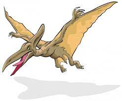
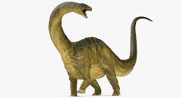
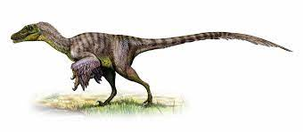
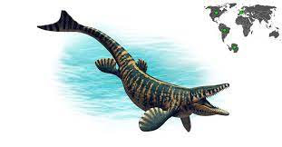

Pterodactylo
Pterodactylus (del griego πτεροδάκτυλος, pterodaktylos, que significa "dedo alado") es un género de pterosaurio, cuyos miembros son popularmente conocidos como pterodáctilos. Fue el primero en ser nombrado e identificado como un reptil volador. Sus restos fósiles han sido hallados primordialmente en la Caliza de Solnhofen de Baviera, Alemania, que data de finales del período Jurásico (principios del Titoniense), hace entre 150.8-148.5 millones de años,2 aunque restos más fragmentarios se han identificado en otras partes de Europa y en África.
Era un carnívoro y probablemente cazaba peces y otros animales pequeños. Como todos los pterosaurios, las alas de Pterodactylus estaban formadas por una membrana de músculo y piel que se extendía desde su alargado cuarto dedo hasta sus miembros posteriores. Esta era mantenida internamente por fibras de colágeno y externamente por bordes queratinosos.
El nombre deriva de las palabras griegas pteron (πτερόν, que significa 'ala') y daktylos (δάκτυλος, que significa 'dedo') y se refiere a la forma en la cual el ala se mantiene gracias a un único gran dedo.
| |
 |
|
|  |
 |
|